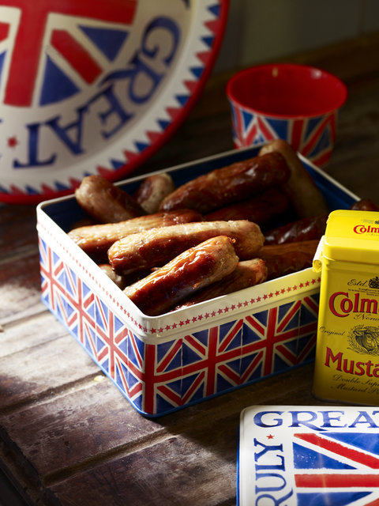
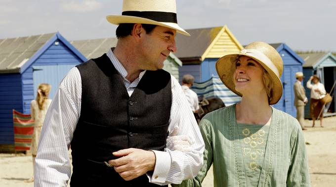

.png)
.PNG)
.PNG)
.PNG)
.PNG)
.PNG)
.JPG)
.JPG)
.PNG)
.PNG)


source
In our last post, we said good-bye to winter, but today I want to bid farewell to Downton Abbey Season 4 and celebrate it with a look at a few British designers. Season 5 is already in the works with several new actresses and actors added to the cast. If you want to be ahead and plan your celebration party for the premiere of that season, you might want to purchase and use some of the precious things I found on an Etsy site. Besides the fabulous banner (below), they also have cupcake wrappers and toppers…all VERY cute!

I don’t know about you, but I was not really thrilled with Season 4. In fact, I had planned to do a series of posts on British designers over several Sunday nights during the season, but I changed my mind after the violent episode with Anna. I almost stopped watching it because of that, but decided to continue to see if it would get any better. I do like how the season ended, and it left me feeling optimistic (much more so than the season finale of Season 3!)
It was good to see Mr. Bates and Anna happy.pbs.org
I thought the end with Mrs. Hughes and Mr. Carson was sooooo sweet.
I LOVED Paul Giamatti as Cora’s brother. (I also loved him as the very kind chauffeur in Saving Mr. Banks.)
But my favorite scene of the entire episode was when Daisy was talking with Mrs. Patmore about turning down the American valet’s offer to be a cook in America. Daisy’s excitement over someone courting her was just too darn cute!
When this season started, I shared a post with you about British designer Emma Sims Hilditch. What I didn’t tell you was her husband is an owner in a tremendous furniture company…Neptune Home. The company began with the plan to design and sell hammocks. It morphed into garden furniture construction, and now they build cabinetry and sell gorgeous furniture and home accessories – kind of like Pottery Barn with a branch in home construction. Here is a small sampling of their work.
Another British company that does amazing work with kitchen cabinetry is Plain English. Take a look at these kitchens.

plainenglishdesign.co.ukplainenglishdesign.co.uk
Martin Moore and Company is also a British design firm that has been in the cabinetry business for almost 40 years. I think you will like some of their creations as well.
And don’t think they only create kitchens. Here is an example of their gorgeous bathroom woodwork.martinmoore.com
When I was a teenager, I was smitten with anything that had the name of English designer Laura Ashley on it, and it was always such a highlight of any trip to Atlanta to shop in the Laura Ashley shop at Lenox Square. (I know she and her husband lived in Wales, but they started their fabric designs in London.) I can remember drooling over the dresses. My very first maternity dress was a periwinkle blue striped dropped waist dress with a sailor collar from that very store. Have you noticed that many of the dresses from this season’s Downton Abbey look as though they could have come from Laura Ashley? Vintage Laura Ashley dresses on Ebay and Etsy are now advertised as having the Downton Abbey look. Just look at the white dress worn by the actress,Poppy Drayton when she is at the picnic with Paul Giamatti. Doesn’t it look like a Laura Ashley dress?
And Laura Ashley clothing was not all that I liked from the company. There were all the fabrics and the wallpapers and the dishes! I dreamed of a cottage decorated in Laura Ashley style. Anyone else do that? Today, the company still makes home goods with charming English cottage style.
The Laura Ashley company has a blog, and they even did a post last winter on how to get the Downton Abbey look with Laura Ashley products. You can see it here.
And there is another British company that makes charming fabrics. Are you familiar with Emily Bond? They design a number of animal prints. No, I’m not talking leopard or anything like that! Think farm animals in the English countryside. The dog print fabrics are wonderful. 🙂
And now for the final British designer I want to share with you today. The very first time I saw a piece of Emma Bridgewater pottery I loooooved it. It was her Black Toast pattern of pottery, and I thought it was just the smartest design I had ever seen for dishes!
If you want a kitchen that is full of English cottage charm, all you have to do is fill your cupboard with Bridgewater Pottery.
And that brings us to the end of our look at some British designers and back to where we started with Downton Abbey. There is a quiz on Downton trivia at pbs.org. You can see it here. (I did not do very well!) What did you think of Season 4? Do you think Lady Mary will end up with either of her suitors in Season 5? (I personally think that somewhere down the road she is going to end up with….Branson.) Will something develop between Mrs. Hughes and Mr. Carson (or are they already secretly married? 🙂 ) Will Michael Gregson ever show up again? If you are not a follower of the series, we’d love to hear your thoughts on the British designs in today’s post. Do any of you own any of the Emma Bridgewater pottery?
Lots to talk about! Leave a comment to jump in the conversation. 🙂
Until next time…


.PNG)
I really enjoyed your blog. Absolutely love the English style so charming and inviting and of course Downton Abbey
——————————————————————–
Thank you Rosa! Yes, the English style is just beautiful. Glad you are enjoying the posts!
Kelly
Hi, really enjoying your site. I have a little robin who visit’s the bird feeder outside my kitchen window, so my husband treated me to a Emma Bridgewater robin mug, my daughter Elona has the puffins one, as we stay beside the sea on the east coast of Scotland. On a walk on Doon hill above Dunbar we saw four goldfinch’s so I have sent off for that one for my husband. More of a Jane Austen, Elizabeth Gaskell, Charles Dickens fan myself. Although, probably biased the BBC does British period drama best.
————————————————————–
I would have to agree that the BBC does British period drama the best (and I LOVE British comedies as well!) I am jealous of your Bridgewater mugs. One day I will have some pieces of her pottery. Enjoy yours!
Kelly
I just found your blog via pinterest and I LOVE everything in this post! As an Anglophile, I’ve always been a huge fan of Laura Ashley and Emma Bridgewater…and I think you may have inspired me to purchase my first piece of Bridgewater pottery today!
Still so depressed that there will be no Downton this Sunday night, drat. What will I do ’til next January???? I think I was meant to live in an English country home, sighing at all the beautiful décor. Love the cottage look, the white and blue, the Emma Bridgewater, and all the rest….. Yep, this season was somewhat disappointing, but the finale was such a redemption. Spectacular. Loved that they were in London and that so many happy moments occurred. And, there were some new threads begun for next season, yay! (How convenient that Mary’s suitor turned out to be a blueblood, phew.)I’ve had it up to here with Daisy, she needs to move to the farm and get on with her life, how old would she be now, she started there before WWI began!!! Oh, and Edith’s daughter comes home and that intrigue with the lover set upon by German Brown Shirts. But, that final scene at the beach – took my breath away. (Expecting another storm tomorrow, sheesh, will it ever stop snowing!)
Oh, thank you for reminding me of the Laura Ashley catalogs! I used to pick them up from the store in my hometown of Brisbane in Australia. Love, love, love their stuff! I am enjoying all the Emma Bridgewater stuff too. Sigh.
I still have a hard time with the idea of our beloved Gillwilly from the series Monarch of the Glen creating Downton. He was so perfect in that role. If you haven’t seen the series it’s on Netflix. He’s an excellent writer too.
I loved Laura Ashley. I’ve always wanted to find a reason to stay at Lord Ashley’s restort in Virginia. I don’t think he still owns it but I remember seeing photos of it decorated with Laura Ashley fabrics.
Kelly, I couldn’t wait to read your post when I saw the headlines. I knew I would need the time to take it all in :). I am almost caught up with all of the Seasons of Downton Abbey! I am waiting for Season 3 from the library. I found that Season 4 was a little short. I too was disappointed with what happened to Anna. The ending was sweet though. Perhaps Mrs. Hughes and Mr. Carson will find courtship as well. I never had made the connection of the actor in Saving Mr. Banks to his role in Downton. Not sure, if Lady Mary will decide on a suitor.
I love Poppy Drayton’s dress. It certainly reminds me of Laura Ashley. I used to shop at the Laura Ashley store way back when my daughters were wee little. I recall applying a wallpaper border in my mother’s kitchen when I was 7 months pregnant (how silly is that)? I purchased mother and child matching garments. This is a trip down memory lane for sure! I loved the picture of the Laura Ashley kitchen so much (probably due to the red accents) that I have made it my screensaver! I agree with Arlene about the Aga stoves. So charming. I think my style for decorating is English cottage. It’s so relaxed and seems effortless, not the look of a put together staged home feel. Have you heard of the website called ModCloth, a clothing company featuring vintage fashions to purchase online?
No, unfortunately, I do not own Emma Bridgewater. Thank you for this fabulous post Kelly. I enjoyed reading it and I shall peruse the websites.
Girl…..!!!!!! I felt the same exact way about Downton Abbey! I have friends that are done because of that scene! Love the material you have on here, I always wonder where in the world do you find all these beautiful pictures!
I thought season 4 was so short! Didn’t it just start in January? I hated the storyline with Anna. I’m sure crap like that has happened since the beginning of time, but I don’t want it brought in to this wonderful show. It made me really mad! I love the same scenes you did! The one thing I don’t like is how from one episode to the next 8 months had passed! I want them to slow down and stay in this time period! They will be in the 1950’s in season 5 at this rate!
I have to say I had the same reaction to Downton Abbey that you had. I almost stopped watching my most favorite show. I so hoped that Anna and Bates would become close again but I knew he would figure out a way to get revenge for Anna. Bates is a shrewed but a very loveable character. The dowager is a hoot but she needs to ease up on Matthew’s mother. Isabell is the most stylish of people in the Downton Abbey world. I love, love her hats. I also thought the season was wayyyyyy too short. Keep up the good work you do….Rebecca
Still haven’t gotten hooked on DA so was a bit lost but still enjoyed seeing pictures and reading the comments. Love English country side and the fashions from that time. Of course, enjoyed the English decorators and looking at the different sources–need more time to go back and look and learn. Are your number plates from that designer? Laura Ashley was and still is so lovely but during that “era”, I was raising children, going back to school and felt I couldn’t afford to buy but did surely did enjoy looking and dreaming.
I soooo love this post and every single image in it. Love Downton Abby. I’ll be dealing with withdrawal until next season. I can’t wait to get acquainted with the Laura Ashley site in particular and the other sites from the UK.
My twin and I always adored Laura Ashley. Her clothes, colors, mix of patterns, home decorating items, how everything was feminine, but not overpoweringly so, etc. I hadn’t heard of the other British designers. Can’t wait to explore their websites, books, whatever I can find, especially Emma Bridgewater. Oooh, her pottery looks like something I would love to own.
Almost like Polish Pottery. Blue/white, yummy!
Oh Kelly,I agree with everyone, great post! I love DA and wish this season had lasted longer. I was relieved no one died, but agree that some of the story lines were not up to par. Hated the Anna rape episode, but realize that maybe this is how we will begin to see the dark side of Bates. Maybe he killed his wife after all……..I loved the scene with Daisy too, it has been fun watching her character grow and she is a favorite of mine. I also agree with Kay and suspect that Aunt Roslyn may be Edith’s mother.
The kitchens you show are to die for…..I am ready to gut mine and get those British designers to give it a fabulous makeover!!!! I was 14 when the Beatles invaded the USA (actually saw them perform in DC that year) so I have loved everything English for a looong time!! I took the DA quiz and I didn’t do well either. I thought some of the questions were strange.
One day my house will look like one of those pictured above. One day…one day!!! Just not today! haha. I have always liked the cottage look. English, country cottage. I have to admit I have not seen the show, but I have heard some good things. Need to find season one and start watching.
I didn’t realize it was the last episode of the season until I turned it on Sunday night. What’s with these Brits thinking that 6 episodes constitutes a “season?” I must say that as much as I love DA, I was a little disappointed with season 4….the whole Anna storyline, plus I feel like they are really dragging this whole thing out with Mary and her men. I thought for sure at the beginning of the season that she was going to wind up with Tom. But wouldn’t it be fun to have Mary and Edith fight over Tom? I love the relationship between the Dowager Countess and Mrs. Crawley. They will be “besties” yet. And I loved the final scene with Mrs. Hughes and Carson. I only fear that if they wind up happily together, something tragic will happen to one of them. (case in point: Matthew) I like the way things ended though with a lot of promise for the next season though.
Does anyone know how long we have to wait for season 5?
I loved every single part of this post! The cottages, the kitchens, Laura Ashley….I’m going to be very busy this weekend visiting all these sites!! I thought, this Season of Downton was a little disjointed. I think it was introducing us to storylines that are going to be expanded on next year. Personally, I think Bates has a very very dark side. I certainly wouldn’t want to cross him. Thanks for another great post. I’m off to make some tea!!
What a wonderful post…… I have always had a special love for English Cottage…. Laura Ashley style…. etc. etc. and Downton Abbey does tend to lean in that direction “Fashion wise” without a doubt… gorgeous ladies ……….. I am leaning toward Branson for Lady Mary!!! 🙂 … so glad the final episode this season ended on a high note!!! ( oh, and the picture labeled “County Show”….well I could move in TODAY!!!!) 🙂 ..have a great day!!
Kelly, great post! I had a hard time this season concerning Anna’s rape. But, I did appreciate the way it was resolved. Justice! I have to admit I am totally enthralled with Downton….and I don’t understand why. I think it would be so cool to get Mr. Carson and Mrs. Hughes hitched…hehe! As far as Lady Mary goes…I’m rooting for Blake. I do like the rooms you showed in this post…I could
live in any of those. I, too, was once smitten with Laura Ashley…maybe I still am? Happy day to you! 😉
Oh sigh! Downton withdrawal has commenced once again. I loved season four. Mrs. Hughes was my hero. So many twists and turns once again with quite a few of the characters. I loved the beautiful costumes, debutante coming out, elegant lawn picnic and simple day at the seashore, my favorite scenes. Mrs. Hughes taking Mr. Carson’s hand was priceless. I can’t wait for season 5. Even before Downton, I was always enjoying our WTTW line up of Doc Marten, Keeping up Appearances, and especially LOVE Judy Dench in As Time goes By. Love the English shows. As spectacular as Downton is, I am a small cottage lover at heart. I love the cottage style picture you posted with all the red. I’ve seen that before. Oh how I would love to live in a stone cottage with timbered ceiling, large walk in fireplace, Aga stove, and eat off of fun Emma Bridgewater pottery. I need a few pieces I think. (Uh oh….thanks Kelly) I’m not familiar with Emily Bond, how cute. Will have to check out the sites you have highlighted and of course the quiz. Great post Kelly!
Debra
Hi Kelly,
Lovely, interesting posting, as usual. Since we do not watch TV I have been waiting for Season 4 to come out in iTunes (or Netflix) so I have no idea what is going on. I think I will need to refresh my memory before I watch it and do a Downton Abbey blitz day watching the first 3 seasons before I tackle the 4th. Looking forward to it!
I have always loved Laura Ashley… I once had a lovely dress like the one worn by Poppy Drayton on the picnic (mine was cream with tiny dusty pink polka dots). I loved that dress and kept it hanging in my closet long after regularly I wore it… just to enjoy it’s loveliness!! 🙂
Thanks again, Kelly.
Hugs
Cath
This season was a little off — lots of complaining. But even a sub-par DA is better than no DA at all, right?
I have had an on-going love affair with all things British (except maybe the food) most of my life — as well as all things French. Maybe I have a split personality? Laura Ashley was the reigning queen in my decor for years.
Another favorite cabinet maker was Smallbone of Devizes. I don’t know if they are still in business, but I think I ripped every ad I saw in the British magazines for their work. The mags from the UK have always been superior (in my opinion).
I loved Laura Ashley…. I still have a couple of her catalogs and books that I still look at from time to time. I have a pretty comforter set that I still use from time to time. Downton Abbey is my favorite, favorite show. Thank you for the post. It sparked some thoughts of redecorating my home with fabrics, like the Laura Ashley fabrics in the couple pictures of rooms. Thank you so much.
Yes, I have Emma Bridgewater pottery, + she sends me her catalog, too! I love it, but it’s a tad spendy!
I designed part of my kitchen based on the downstairs kitchen in Downton — yay!
Oh, if you’re in Barnes + Noble, look at the British home magazines — the interiors are wonderful + so are the ADS! I want to order 1 of everything!
I think Aunt Ros-something is actually Edith’s biological mother!
Stay tuned to see if I’m correct!
I like anything English and I am really going to miss Downton on Sunday nights. This season was different and I too hated to see Anna attacked as she was!! But as you said, the ending was perfect and we will see where season 5 heads. I love those big Aga stoves in English kitchens!! And Emma Bridgewater…love her pottery. I could go on and on. Thanks for sharing all the gorgeous pictures!
Great post Kelly!
re: Carson and Mrs Hughes… are they SECRETLY MARRIED????? I just fell out of my chair. Never even entered my mind.
re: Mary and her suiters… I thought she might eventually marry Branson too, but after last weeks finale, I wondered about Branson and EDITH…. What do you think?
I agree that the episode about Anna was hard to watch — but I’m glad I hung in there, as I really liked the last episode!
Kelly,
I have you to thank for introducing me to the drama of Downton Abbey. I had never watched it before (I actually thought it was DownTOWN Abbey) and had no idea what I was missing out on until I read your post last year. I mentioned to my kids that I might want to watch that series, so they gave me the first three seasons for my birthday last March. Oh, how I would race home from school to watch a few episodes each night. It seemed like an eternity for Season 4 to start.
I agree with Karen–that teacher is going to probably be bad news for poor Tom. I would have to say that Granny (Violet) is probably my favorite character because of her fabulous one- liners! She can make me laugh so hard I snort.
Thanks for another great post! Enjoy your week.
Loved Season 4 — especially the scenes from the Palace at the end. I’m so crazy about it I started a Facebook Community page — Downton Abbey Fans — for anyone who needs a “fix.” And Laura Ashley — oh my — I had that very same maternity dress. Too funny — and my head was full of her fabrics and designs for years! Her stuff was out of my budget at the time. Such a nice post — I thoroughly enjoyed it and will revisit it! Thank you!!
Kelly,
As an anglophile, of course I loved Laura Ashley and we own several Emma Bridgewater pieces. Such a fun post. I was ready to write a letter of complaint to Julian Fellows, his unspeakable scene was totally unnecessary and I was irritated. I read that many British viewers felt the same. I was happy with the ending and my only concern was that sweet Tom doesn’t end up regretting is association with the school teacher who seems a little pushy to me at this point. I’ll have to go back and visit all of the links in this post. You always provide such fun information. Thanks for the information.
xo,
Karen
So that’s where I had seen him…..thanks for helping me connect Cora’s brother with the chauffeur from Saving Mr. Banks. Yes, so good to see Anna and Mr. Bates happy! I also had a fleeting thought that Mary may someday end up with Mr.Branson. I love, love, love this show but I did think the prince and the stolen letter situation was a little far fetched but oh, all the coming out pagentry was fun. And Edith, well poor Edith…..
I am going to check out the Laura Ashley blog. I never tire of her style!
As Mr. Carson would say, “Good night, My Lady.”